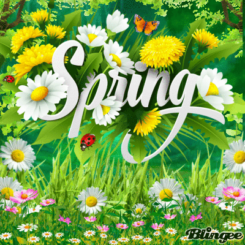

Spring Photos Showcase
A beautiful garden filled with daisies their bright colorful petals against the green leaves.
Spring
Why I Chose This Image
I chose this picture because it portrays the simplicity and beauty of nature. These flowers aew often associated with purity and innocence.
Source
Questions
Since we are doing these projects will you consider uploading some meaningful ones in our linkedin account as accomplished projects?